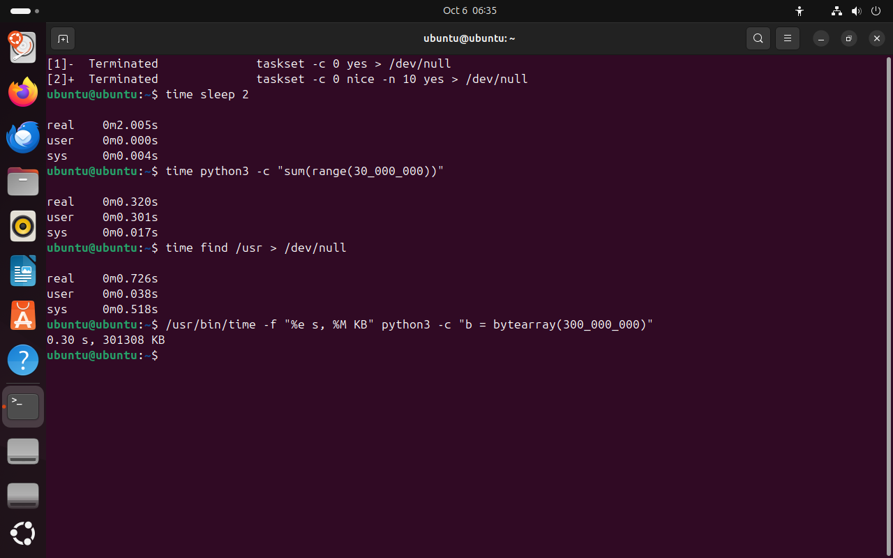

Часть 5 из 7
Сколько стоит команда: time
В этой части разберём, как командой time измерить время работы программы, чем отличаются real, user и sys и как узнать, сколько памяти заняла программа.
5.1 Три времени
Слово time перед командой запускает её и после завершения печатает три числа. Так проверяют, на что программа тратит время: считает сама, работает через ядро или ждёт.
| Строка | Что значит |
|---|---|
real | время по часам от запуска до завершения |
user | процессорное время на код самой программы |
sys | процессорное время, которое ядро потратило по просьбам программы: чтение файлов, создание процессов, работа с сетью |
Три времени похожи на учёт на кухне ресторана. real — сколько гость ждал блюдо по часам. user — сколько повар сам резал и жарил. sys — сколько за повара работали другие: кладовщик приносил продукты, посудомойка мыла сковороду. Если гость ждал час, а повар работал десять минут, блюдо ждало чего-то другого.
| Соотношение | Что это значит |
|---|---|
real намного больше user + sys | программа ждёт: таймер, диск, сеть или очередь к занятому процессору |
real ≈ user | программа считает и занимает одно ядро |
sys заметно больше нуля | много работы с файлами и другими ресурсами ядра |
user + sys больше real | программа работает на нескольких ядрах одновременно |
5.2 Память программы
В bash time — ключевое слово оболочки, и печатает оно только время. Отдельная программа /usr/bin/time умеет больше. С ключом -f ей задают формат вывода: %e — время по часам в секундах, %M — наибольший объём памяти, который занимала программа, в килобайтах.
Пиковую память измеряют, когда решают, сколько программ можно запускать одновременно. Если отчёт занимает 2 ГБ, а на сервере 6 ГБ, три отчёта сразу память исчерпают.
time sleep 2# ждётчто делает
Что делает команда. Выполняет sleep 2 и печатает время по часам, время программы и время ядра.
По частям:
time- ключевое слово bash: выполнить команду и напечатать, сколько времени она заняла
sleep- ничего не делать указанное число секунд
2- сколько секунд
time python3 -c "sum(range(30_000_000))"# считаетчто делает
Что делает команда. Выполняет расчёт на Python — сумму 30 миллионов чисел — и печатает три времени.
По частям:
time- ключевое слово bash: выполнить команду и напечатать, сколько времени она заняла
python3- запустить интерпретатор Python
-c "sum(range(30_000_000))"- выполнить программу из строки "sum(range(30_000_000))"
time find /usr > /dev/null# обходит каталогичто делает
Что делает команда. Обходит все каталоги /usr, выбрасывает список и печатает три времени.
По частям:
time- ключевое слово bash: выполнить команду и напечатать, сколько времени она заняла
find- обойти каталоги и вывести пути всех найденных файлов
/usr- с какого каталога начинать (абсолютный путь)
>- записать вывод в файл
/dev/null- устройство, которое выбрасывает всё записанное
/usr/bin/time -f "%e s, %M KB" python3 -c "b = bytearray(300_000_000)"# время и пиковая памятьчто делает
Что делает команда. Запускает программу на Python, которая занимает 300 миллионов байт, и печатает время по часам и пиковую память.
По частям:
/usr/bin/time- программа time: выполнить команду и напечатать заданные сведения о её работе
-f "%e s, %M KB"- формат вывода "%e s, %M KB": %e — время по часам в секундах, %M — пиковая память в килобайтах
python3- запустить интерпретатор Python
-c "b = bytearray(300_000_000)"- выполнить программу из строки "b = bytearray(300_000_000)"
- 1sleep ждёт: real 2 с, user и sys почти 0
- 2Python считает: real ≈ user
- 3find: основное время — sys, работа ядра с каталогами
- 40,30 с и пиковая память около 300 000 КБ


Весь снимок ↗Время sleep, расчёта на Python и обхода /usr; пиковая память программы.
Что показывает снимок. sleep 2 шёл 2 секунды по часам и почти не тратил процессор. Расчёт на Python потратил 0,30 с из 0,32 на свой код. У find основное время — sys: ядро читает каталоги. Программа с bytearray заняла 301 308 КБ памяти.
Где это пригодится. Перед запуском программы на сервере её измеряют /usr/bin/time: время и пиковая память говорят, сколько таких программ сервер выдержит одновременно.
Итоги части 5
time командапечатаетreal— по часам,user— код программы,sys— работа ядра для программы.realнамного большеuser + sys— программа ждёт;real≈user— считает./usr/bin/time -f "%e s, %M KB"печатает время и пиковую память.
В отчётСнимок с time: объясните соотношение real, user и sys для каждой из трёх команд.